业务现象： $2.99 首次付费转化率不理想，用户付费意愿不足。
体验观察： 用户提出建站需求后，AI 主要通过问答收集信息，缺少专业建议和具体方案展示，随后便引导用户付费。
核心矛盾： 用户还不清楚 AI 能做出什么样的网站，就需要先为结果付费。
设计假设： 如果能在付费前展现 AI 的专业能力，并让用户提前了解网站方案，就有机会增强用户信任，提升付费转化。
01 · Project Overview
让 AI 从简单的问答工具，转变为专业的建站顾问。通过理解需求、提供建议和展示方案，让用户在付费前就能感受到价值，从而提升付费意愿。
首次付费转化不理想，业务希望提升 $2.99 支付转化
用户在尚未建立信任和形成明确交付预期时，就被要求付费
与约 10 家真实建站外包团队沟通，拆解服务方式和信任建立机制
提炼专业性、可靠性、用户导向与低压力四类服务特征
从零散功能优化转为完整的顾问式建站体验，并制作 Demo
PRD、开发、内部体验、A/B 实验及效果评估
02 · The Challenge
业务现象： $2.99 首次付费转化率不理想，用户付费意愿不足。
体验观察： 用户提出建站需求后，AI 主要通过问答收集信息，缺少专业建议和具体方案展示，随后便引导用户付费。
核心矛盾： 用户还不清楚 AI 能做出什么样的网站，就需要先为结果付费。
设计假设： 如果能在付费前展现 AI 的专业能力，并让用户提前了解网站方案，就有机会增强用户信任，提升付费转化。
因为付费页面可能只是问题暴露的位置，而问题的形成发生在更早的需求沟通阶段。
03 · Research
我以潜在建站客户的身份，实际接触约 10 家提供建站服务的团队，观察他们如何进行销售咨询。整理聊天记录后，我逐句分析哪些沟通行为让我感到专业、可靠，哪些增加了理解成本，再归纳服务特征和沟通原则。
因为用户最终购买的并不是几句 AI 回答，而是一个能够满足业务需求的网站。真人服务团队在沟通需求、呈现专业性和促成交易方面，提供了可参考的模式。
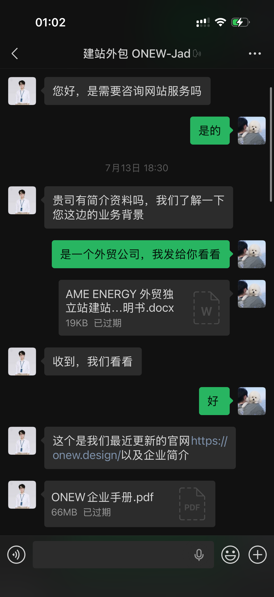
先询问业务背景，确认收到需求资料，再提供官网与企业介绍。
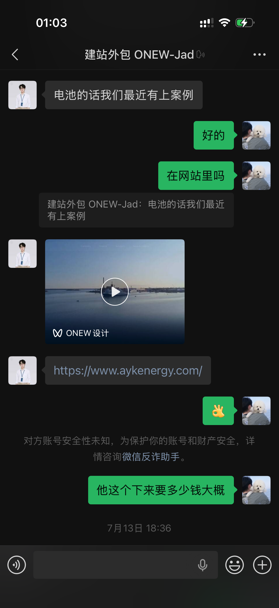
围绕电池行业提供案例视频与网站链接，供咨询者进一步了解。
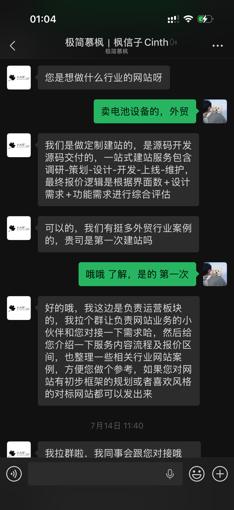
说明定制建站流程、源码交付和报价依据，并安排后续需求对接。
分析真实咨询对话后，我们将好服务的特征归纳为四类：可靠、可信、用户为中心和轻松。它们分别对应用户对专业能力、合作可靠性、需求理解和沟通压力的判断。
展现行业和产品专业素养
用户的判断：懂不懂行？
诚实靠谱、跟进及时、反馈清晰
用户的判断：靠不靠谱？
为用户着想，理解实际业务目标
用户的判断：懂不懂我？
降低沟通、决策与付费压力
用户的判断：合作有没有压力？
这四类是对服务行为的归纳，并不是已经被实验证实的付费驱动因素。
把这些特征进一步拆到具体沟通中，我们整理出六类可参考的行为原则。
让用户潜意识里觉得：“这个团队专业、靠谱、懂我，值得信任，合作会很轻松且有价值”。
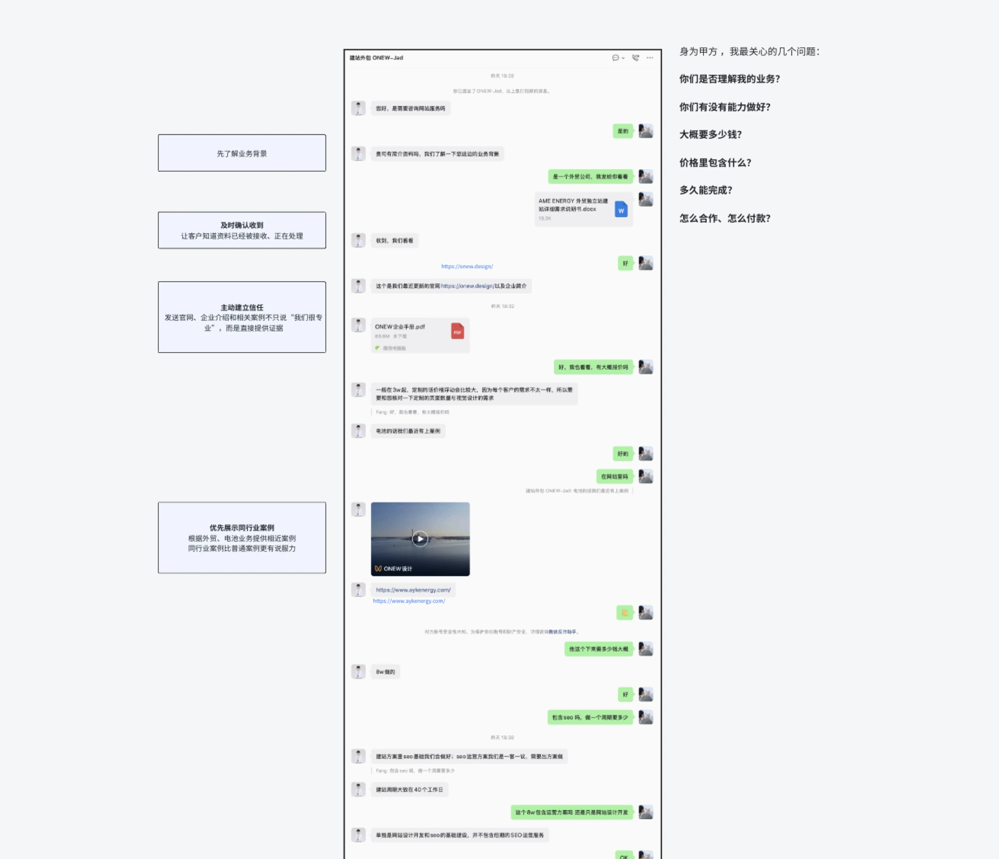
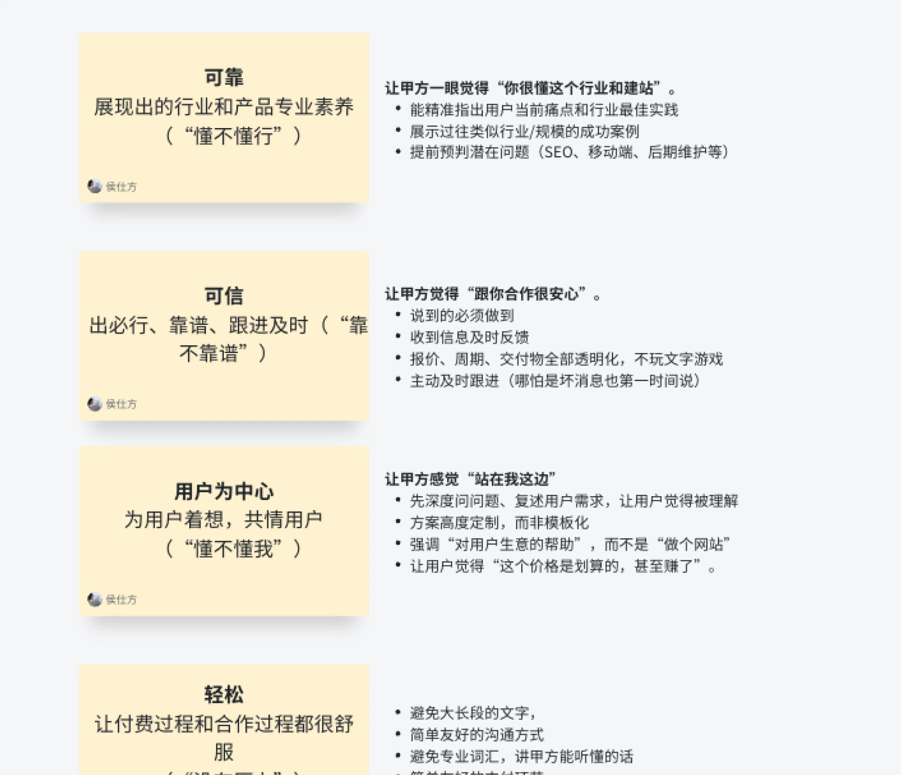
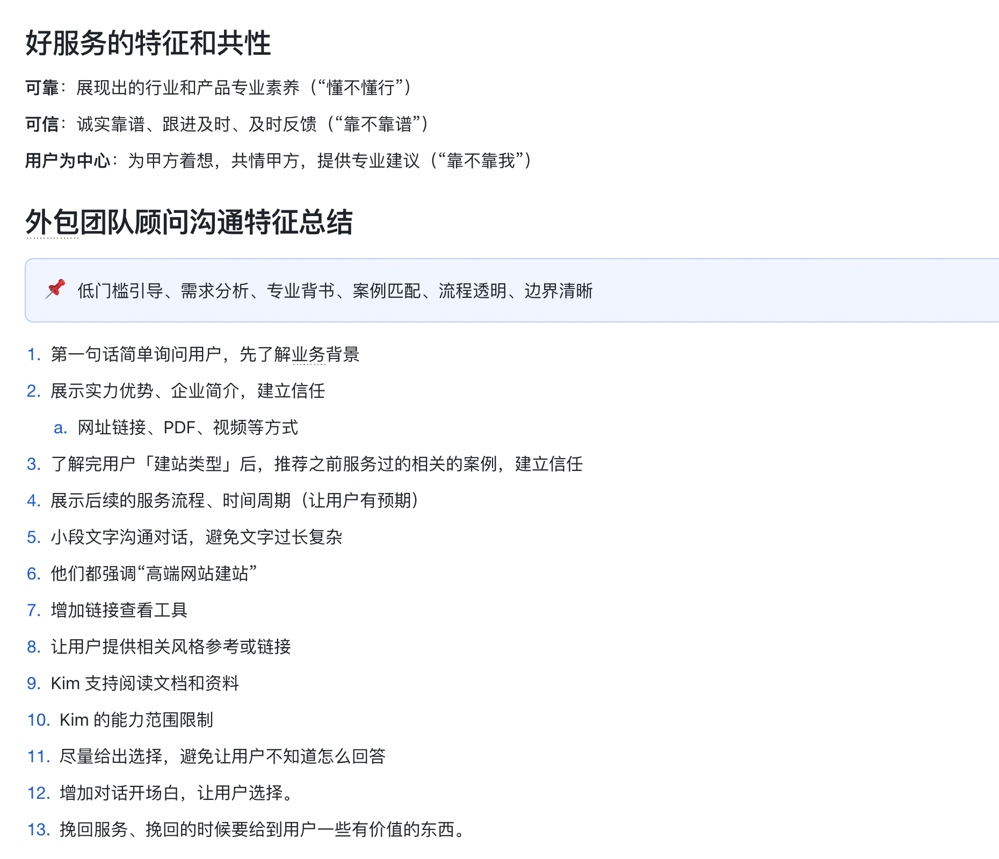
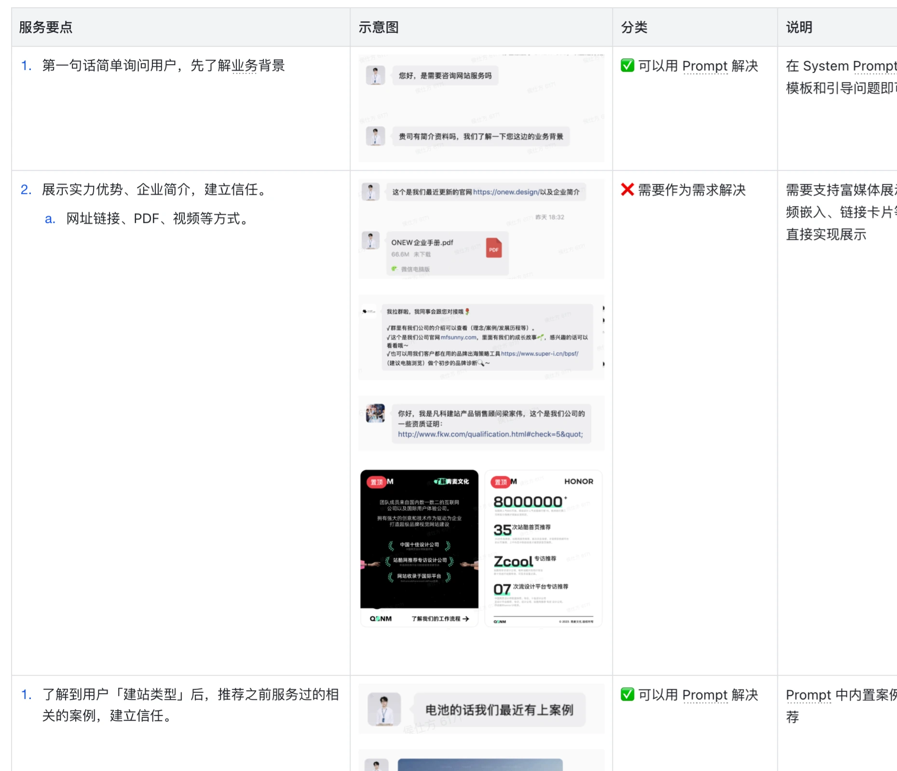
04 · Design Strategy
基于这些服务特征和沟通原则，我们将研究结论转化为具体的产品需求，围绕需求理解、专业建议、网站设计稿选择和明确交付，设计完整的付费前对话流程。
通过 Demo 将流程串联起来，再细化 PRD 和交互方案，推进开发与上线验证。
| 用户需要建立的信心 | 设计策略 | 对应的产品体验 |
|---|---|---|
| 你懂我的需求 | 更有效的需求理解 | 关键问题询问、需求总结 |
| 你具备专业能力 | 提供专业判断 | 网站结构、设计建议 |
| 你能做出我想要的东西 | 展示可见的价值 | 三张网站设计稿、风格选择 |
| 你交付的东西是明确的 | 明确项目范围 | 项目启动单 |
| 和你合作是轻松的 | 降低沟通成本 | 口语化表达、简化问题、提供选项 |
如何在尽可能短的时间内，让用户建立足以支持首次付费决策的信任？
这里的「最短时间」不是让所有用户越快付款越好，而是在控制沟通成本的同时，让每一次交互都真正增加用户对结果的确定性。
05 · Solution
从用户感知和设计逻辑来看，七个阶段可以收束成六个关键设计动作。
| 01建立信任 | 02挖掘需求 | 03理解需求 | 04专业建议 | 05证明价值 | 06明确交付 | 07引导行动 |
结合用户的业务背景回应并提问，用简短易懂的语言，让不懂建站的用户也能像微信聊天一样轻松交流。
根据问题提供可点击的回答选项，也支持自由补充，减少组织答案和输入的负担。
解决：不知道怎么回答、输入负担重、需求沟通成本高。
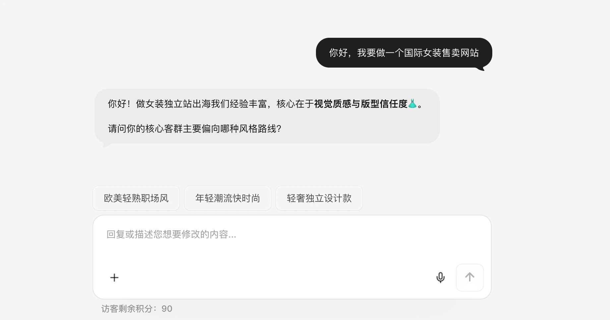
根据用户的业务目标，给出页面规划、首页动线和专业建议，让用户看到自己的需求如何转化为具体的网站结构，并确认或调整方案。
解决：用户不了解网站如何组织，也难以判断 AI 是否理解了自己的需求。
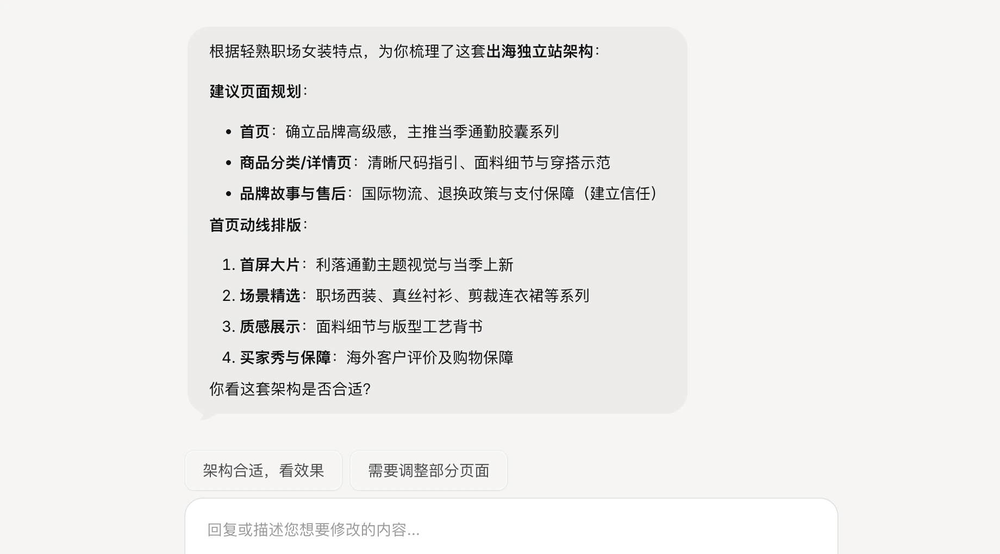
基于用户前面的聊天信息，AI 在付费前生成三张网站设计稿，提供不同的视觉方向。用户可以对比并选择喜欢的一张，再付费并按选定方向生成网站。
先看到效果，再决定是否付费，让原本只能依赖想象的建站结果变得具体。选择设计稿也帮助用户与 AI 对齐视觉偏好，减少对结果的不确定性，建立继续付费的信心。
先看到自己网站的样子，再决定是否付费。
解决：付费前看不到效果、风格难以描述、对生成结果缺少把握。
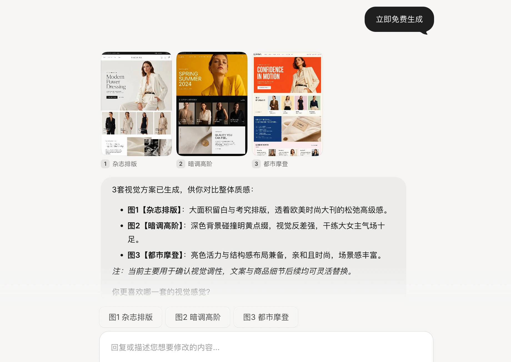
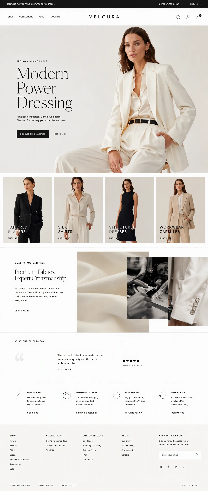
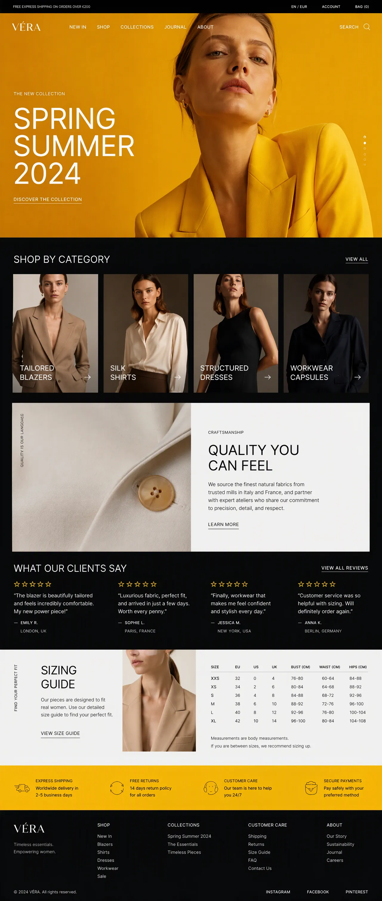
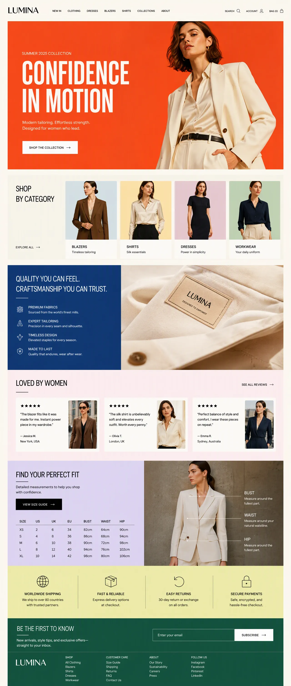
用户上传自己的商品图后，AI 会结合对话中的需求，将商品融入网站设计稿。让用户看到自己的商品在网站中的呈现方式，更直观地判断方案是否符合预期。
解决：设计稿缺少用户的实际商品，难以判断是否适合自己的业务。
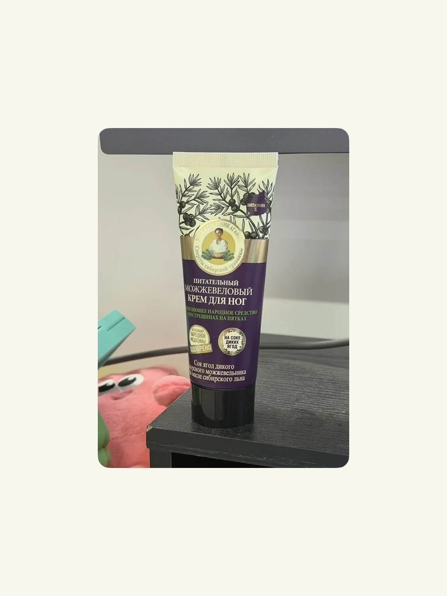
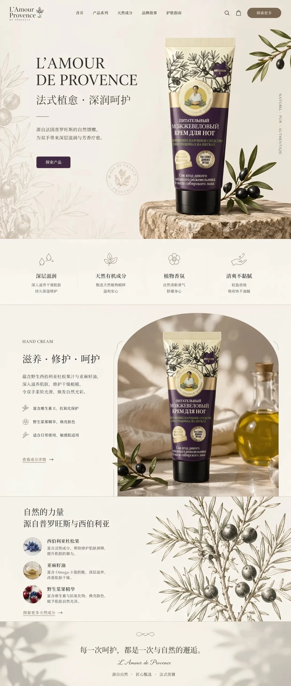
将前序沟通成果汇总为一个结构化、个性化的项目方案，让用户明确自己要制作什么、采用什么设计方向、将获得什么。
解决：突然收费、付费对象模糊、交付预期不清晰。
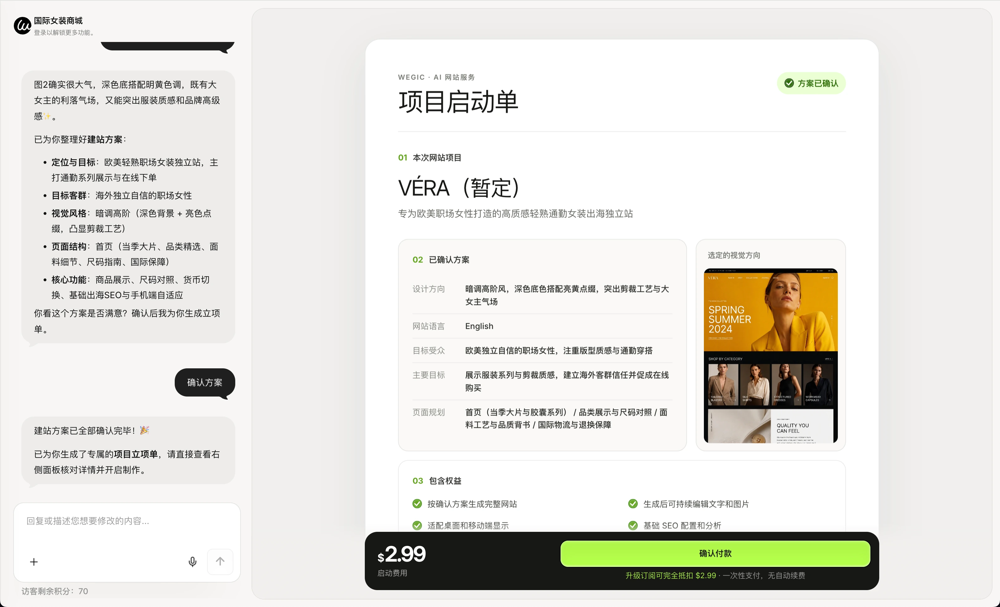
根据对话上下文和用户所在行业，推荐 Kimmy 的相关建站案例。让用户通过具体作品了解 Kimmy 的行业经验与设计能力，为建立信任提供依据。
解决：缺少相关案例参考，难以判断 AI 是否具备行业经验与设计能力。
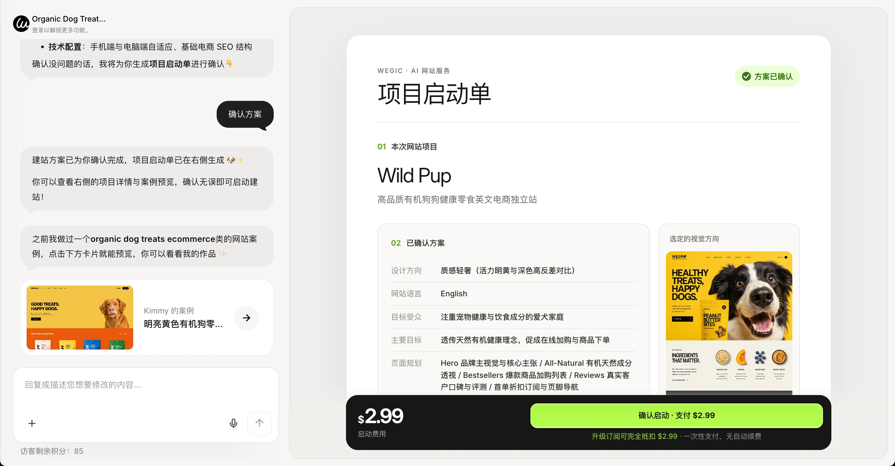
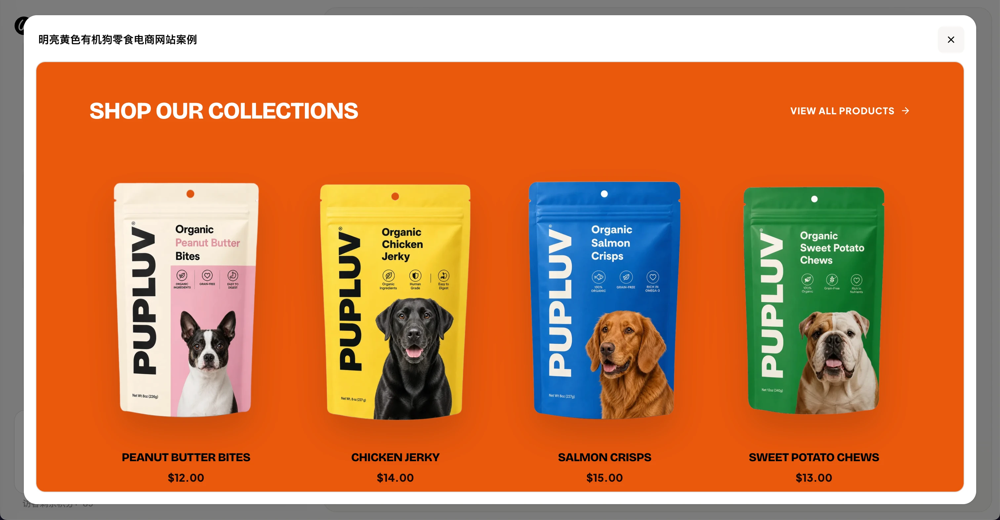
其中，项目启动单相当于整个体验的收束节点。它不只是支付入口，更是一份将对话信息转化为明确服务承诺的结构化交付物。
06 · Validation
内部人员觉得新 Demo 更好，只能说明方案获得了初步定性认可，不能作为真实用户转化改善的证据。
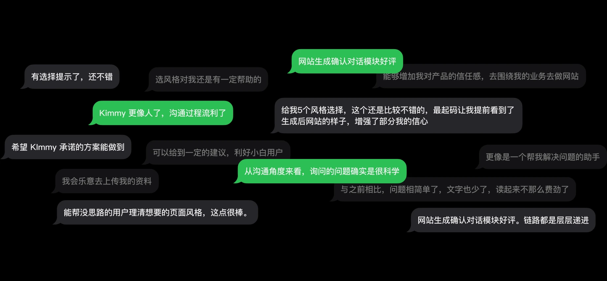
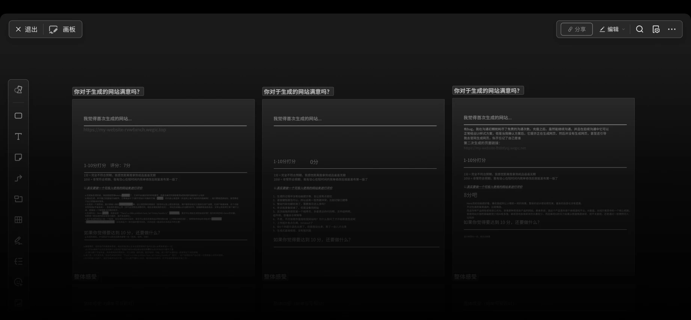
07 · Impact
业务成果：A/B 测试中，新方案首次付费转化率从 4.20% 提升至 5.86%，相对提升约 39.5%，验证了整体体验改版对付费转化的正向效果。
设计价值：将原本简单的 AI 问答与付费引导，升级为一套完整的顾问式建站体验。通过理解需求、提供专业建议、展示设计方案和明确交付内容，让用户在付费前就能感受到 AI 的价值。
08 · Reflection
这次项目让我更加明确：设计师的价值不只是设计界面和交互，更重要的是能够发现问题、提出策略，并通过设计推动业务结果。
面对首次付费转化率不理想的问题，我没有局限于优化支付页面，而是从用户的付费决策过程出发，主动研究真实建站服务中的沟通方式，提炼信任建立的关键因素，再结合 AI 的能力，将这些洞察转化为完整的产品体验，并通过 A/B 测试验证效果。
AI 时代，了解模型和工具只是基础。更重要的是理解业务问题，知道如何利用 AI 与 Agent 的能力重新设计产品体验和工作流程。
在这个项目中，我们并不是简单地让 AI 回答得更好，而是让它能够理解需求、提供专业判断、持续展示成果，并引导用户完成付费决策。
这也让我更加坚定自己的设计方向：
懂业务、会用 AI、能落地、见价值。
未来，我希望自己不仅是一名能够做好交互体验的设计师，更是一名能够主动定义问题、结合 AI 能力提出解决方案，并用数据验证商业价值的产品设计师。